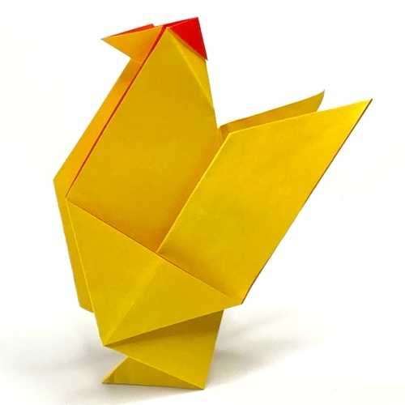
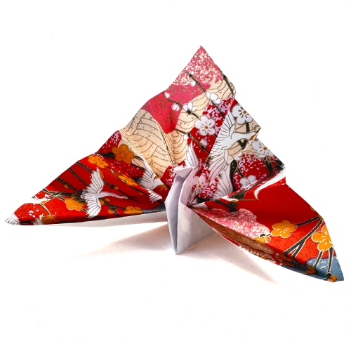

Paper Flapping Bird

Paper BasketChick

Paper Chicken

Paper Celebration Crane
Origami bird designs are simple, creative, and exciting paper models that inspire kids to explore the art of folding. These fun bird creations help improve concentration, patience, and fine motor skills while encouraging imagination and creativity. With easy step-by-step folds, children can make beautiful paper birds and enjoy a playful, hands-on learning activity that builds confidence and artistic expression.
Paper Flapping Bird
Paper BasketChick
Paper Chicken
Paper Celebration Crane